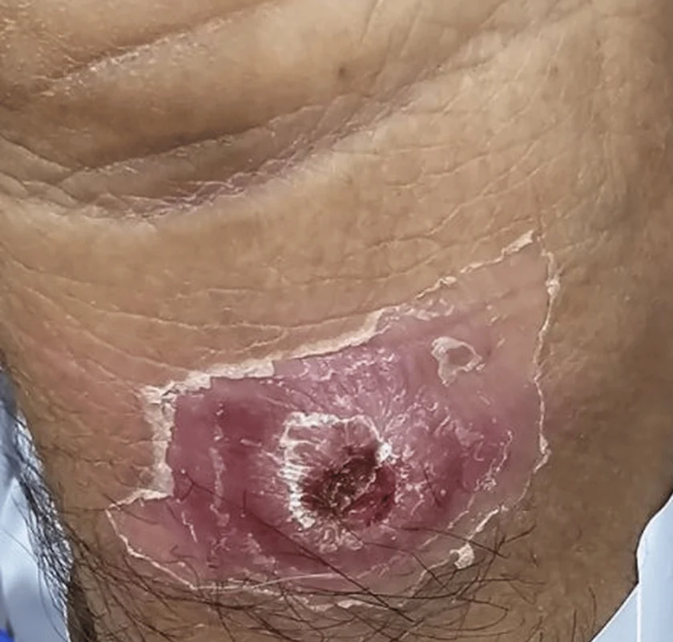
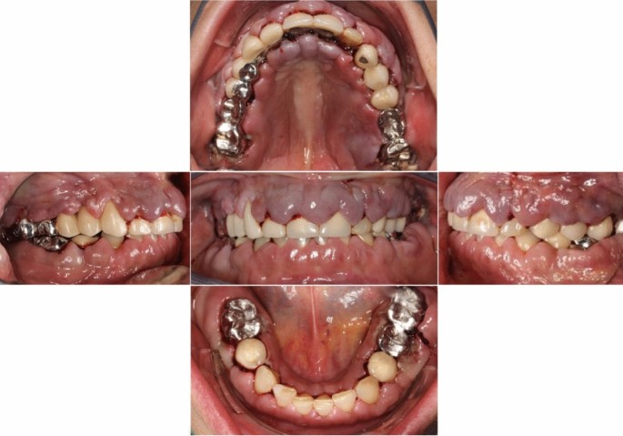
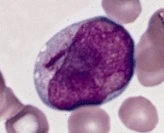

急性骨髓性白血病（AML）：臨床表現、病理特徵與診斷
AML 的異常髓系前驅細胞在骨髓增生，抑制正常造血，引起貧血、感染與出血，也可能浸潤皮膚、齒齦等組織。本文從初診急症出發，說明如何整合骨髓形態、流式細胞儀與遺傳結果，依 WHO5 或 ICC 完成分類。
- 初診急症
- 疑似 APL，立即處置
- 髓外浸潤
- 皮膚與齒齦
- 骨髓檢查
- 形態＋流式＋遺傳
- 診斷芽細胞門檻
- 依亞型與分類
1. 疾病概論與流行病學
急性骨髓性白血病（Acute myeloid leukemia, AML）是一組具高度異質性的侵襲性血液惡性腫瘤，特徵為分化受阻的髓系前驅細胞（granulocytic、monocytic、erythroid 或 megakaryocytic）發生克隆性增生（clonal proliferation），造成白血病芽細胞（leukemic blasts）堆積於骨髓、周邊血或其他組織，並導致正常血球減少。
- 流行病學：成人最常見的急性白血病類型。美國年齡標準化發生率約每年每 10 萬人 4 例，診斷以較年長成人為主。統計依資料期間與族群而異。NCI SEER
- 危險因子與前驅病變：
- 環境暴露：細胞毒性化療、放射線、化學物質、抽菸。
- 胚系遺傳異常（Germline predisposition）：唐氏症（trisomy 21）、Fanconi anemia，以及 CEBPA、DDX41、RUNX1 等胚系致病性變異。
- 前驅血液狀態：克隆性造血（CHIP、CCUS）、骨髓增生異常症候群／腫瘤（MDS）、骨髓增生性腫瘤（MPN）、陣發性夜間血紅素尿症（PNH）。
💡 臨床註記：急性前骨髓細胞白血病（Acute promyelocytic leukemia, APL）為 AML 中極易併發 DIC 出血的獨特亞型，高度懷疑時應送 PML::RARA，並立即啟動 ATRA 與凝血支持。ELN APL
2. 臨床表現與髓外浸潤
2.2 髓外病灶與各器官表現（Extramedullary Disease）
PETAML 前瞻性研究納入 93 人，基線 PET/CT 有 23% 出現疑似髓外 AML 病灶。這是特定隊列與檢查方式的結果。髓外病灶可在淋巴結、皮膚、齒齦等處出現。PETAML 原文
- 皮膚（Skin）：白血病皮膚浸潤可呈紫紅、紅褐或灰藍色丘疹、結節或斑塊，較常與單核球分化有關。鑑別包括感染與 Sweet syndrome，必要時取切片。
- 口咽與齒齦（Oropharynx）：齒齦肥厚／增生（gingival hypertrophy）特別常見於單核球亞型 AML，亦可見念珠菌或疱疹感染。
- 骨骼／關節痛：成人可有骨痛或關節痛。依表現鑑別感染、晶體性關節炎與白血病浸潤。
- 眼部：眼底出血、白色斑塊、結膜蒼白。
- 中樞神經系統（CNS）：無神經症狀的成人通常不常規做腰椎穿刺。神經症狀或特定高風險特徵須由血液科個別評估。
- 器官腫大：可見肝脾腫大。顯著淋巴結或脾腫大時也須鑑別 ALL、CML 急變等疾病。

紅紫色斑塊中央可見潰瘍，邊緣有脫屑。白血病皮膚浸潤也可呈丘疹或結節，必要時以切片鑑別。
Saied 等，Cureus（2026），圖 1 · CC BY 4.0 · 裁切與縮圖
注意齒間與牙齦邊緣的瀰漫性增厚。結合血球計數與其他臨床線索評估。
Kiramira、Cores 與 Gaida，Periodontal and Implant Research（2024），圖 1 · CC BY-NC-ND 4.03. 內科急症與初始處置警語
🚨 臨床警語：等待分子分型期間，須優先辨識並處理下列致命急症。
| 急症類別 | 核心定義與臨床警訊 | 臨床重點與處置原則 |
|---|---|---|
| 高白血球血症／白血球滯留症 (Hyperleukocytosis / Leukostasis) | 高白血球血症常以 WBC >100 × 10⁹/L 界定。白血球鬱滯是臨床診斷，也可在更低數值發生，常影響肺部或中樞神經。 | 雖於 de novo AML 較少見，但出現呼吸或神經症狀即為內科急症，須緊急降白血球與支持處置 |
| 神經學併發症 (Neurologic Complications) | 新發神經缺損、頭痛、意識改變（CNS 出血、髓系肉瘤或白血病腦膜炎） | 疑顱內出血時先做無顯影劑腦部 CT。依症狀選擇影像與評估腰椎穿刺，先處理出血風險及排除顱壓增高等禁忌。 |
| 腫瘤溶解症候群與代謝異常 (TLS) | 高血磷、低血鈣、高尿酸、高血鉀，可合併急性腎損傷 | 積極水化、降尿酸藥物與密集電解質監測 |
| 出血與凝血病變（DIC） | 血小板低下、血小板功能異常或 DIC 所致出血 | DIC 最常見於 APL；初診驗 PT、aPTT、纖維蛋白原及 D-dimer。高度疑似 APL 即送 PML::RARA 並啟動 ATRA 與凝血支持。 |
4. 臨床、檢驗、影像與骨髓病理評估
遵循 2022 ELN 指引 與 CAP-ASH 診斷指引。
4.1 基礎檢驗與高白血球「偽檢驗異常」
- 常規檢驗：CBC/DC、抹片判讀、PT、PTT、Fibrinogen、CMP、LDH、Uric acid、Phosphorus。
- ⚠️ 高白血球造成的偽異常（Spurious Lab Abnormalities）：
- 偽低血糖：試管內白血球持續代謝消耗葡萄糖。
- 偽高血鉀：凝血破裂、延遲處理或氣送管震盪造成細胞溶血釋出鉀離子，須溫和運送並迅速處理。
- 偽低血氧：ABG 顯示低血氧但脈衝血氧（SpO₂）正常；優先迅速分析血氣，採檢與運送依實驗室規範。先評估是否有真實低氧或白血球鬱滯。
4.2 影像與 CNS 評估
- 不常規安排全身影像；懷疑髓系肉瘤時安排 ¹⁸F-FDG PET/CT。
- 無神經症狀的成人通常不例行腰椎穿刺。若懷疑 CNS 白血病，依病況先做影像並處理凝血風險，再由專科評估穿刺及是否給予鞘內治療。
4.3 骨髓抽吸與切片（Bone Marrow Aspirate & Biopsy）
- 部位：成人首選單側後上腸骨棘（胸骨僅可抽吸不可切片）；穿刺部位罕見嚴重出血或感染。
- 抽吸檢查：
- Wright-Giemsa 染色行 500 顆細胞分類計數（須含 myeloblasts 及 blast equivalents 如 neoplastic promyelocytes、promonocytes）；流式細胞儀不可取代形態學計數。
- 傳統染色體帶紋分析（Karyotype）為必做（FISH 無法取代）；NGS 髓系基因套組、快速 PCR／FISH 與 RNA 融合檢測依臨床時效與標的互補。疑似 APL 優先快速送 PML::RARA。
- 切片與乾抽（Dry tap）對策：乾抽時，可用核心切片製作 touch preparations 評估形態。預先與病理及流式實驗室協調，另送新鮮檢體作流式與分子檢測。
5. 病理特徵、形態學與表面抗原（Table 1）
5.1 周邊血與骨髓形態
- 周邊血：白血球可高、低或正常。常伴正球性貧血或血小板低下，沒有周邊血芽細胞也不能排除 AML。
- 骨髓形態：多為高細胞密度，典型髓系芽細胞具大核、明顯核仁、淡藍胞質。Auer rods（奧爾氏小體）為粉紅／紅色桿狀胞質結構，支持髓系分化，須結合形態、流式與遺傳結果。

觀察細胞核左側的細長桿狀胞質結構。Auer rod 支持髓系分化。
AFIP Atlas of Tumor Pathology／PEIR，Wikimedia Commons · 公有領域5.2 AML 表面抗原表現頻率（CALGB 8361）
下表為 CALGB 8361 隊列的標記表現，以當時檢測條件與病例組成為準。流式須綜合多項標記及亞型。APL 常見 HLA-DR、CD34 陰性，部分病例可見 CD2。
| 表面抗原 (Antigen) | 初診斷表現 (%) | 復發時表現 (%) | 備註 |
|---|---|---|---|
| CD2 | 11% | 22% | 常見於 APL 共表現 |
| CD3 | 2% | 0% | T 細胞特異標記 |
| CD4dim | 72% | 78% | 多數病例呈弱陽性 |
| CD7 | 22% | 30% | 常見異常共表現之 T 系標記 |
| CD8 | 1% | 5% | 極少表現 |
| CD11b | 41% | 37% | 髓系／單核球成熟標記 |
| CD13 | 98% | 97% | 最普遍之泛髓系標記 |
| CD14 | 12% | 8% | 單核球分化標記 |
| CD15 | 82% | 78% | 顆粒球／單核球高頻標記 |
| CD16 | 2% | 3% | 極少表現 |
| CD19 | 5% | 8% | 特定見於 RUNX1::RUNX1T1 AML |
| CD32 | 76% | 74% | 髓系高頻表現 |
| CD33 | 75% | 78% | 核心髓系標記 |
| CD34 | 64% | 74% | 造血前驅細胞標記（APL/NPM1 常陰性） |
| CD38 | 96% | 94% | 高頻表現 |
| CD56 | 17% | 21% | 異常標記（須與 BPDCN 鑑別） |
| CD64 | 50% | 45% | 單核球／髓系標記 |
| HLA-DR | 76% | 74% | 多數陽性（APL 典型為陰性） |
- 細胞遺傳／分子：染色體與分子結果可影響分類、風險、標靶治療或 MRD 追蹤。PML::RARA 影響急症處置，FLT3 與 IDH1/2 等結果可影響特定處方。
6. 診斷標準：WHO5 與 ICC 重點對照
| 分類項目 / 基因異常 | WHO5（2022）標準與命名 | ICC（2022）標準與命名 |
|---|---|---|
| 核心定義性基因融合，t(15;17)/PML::RARA（及其他 RARA）、t(8;21)/RUNX1::RUNX1T1、inv(16)/t(16;16) CBFB::MYH11、t(9;11)/MLLT3::KMT2A（及其他 KMT2A）、t(6;9)/DEK::NUP214、inv(3)/t(3;3) GATA2;MECOM（及其他 MECOM）分類差異 | 多數此類異常無固定最低芽細胞百分比，需符合病理與分子脈絡 | 具上述定義性基因異常且 Blasts ≥10% 即診斷 AML |
| AML with BCR::ABL1共同標準 | 須 Blasts ≥20% | 須 Blasts ≥20% |
| AML with mutated NPM1分類差異 | 配合適當臨床病理相關性時，不限芽細胞比例即可診斷 | 須 Blasts ≥10% |
| AML with CEBPA mutation分類差異 | ≥20%，符合雙等位突變或單一 bZIP 區域突變定義 | ≥10%，限 bZIP 區域 in-frame 突變 |
| 髓系肉瘤（Myeloid sarcoma）共同標準 | 可獨立診斷髓系肉瘤，仍須評估是否合併骨髓 AML | 同左 |
| 無定義性基因異常分類差異 | 排除其他定義型實體後，≥20% 可依分化類型分類，10–19% 可依條件歸為 MDS-IB2 | 排除其他定義型實體後，≥20% 可歸 AML, NOS，10–19% 可依條件歸 MDS/AML |
| TP53 突變分類差異 | Blasts ≥20% 時依其他遺傳特徵分類，必要時加註治療相關或胚系修飾詞 | 獨立類別（ICC 表 25 以 VAF >10% 為界）：Blasts ≥20% 為 AML with mutated TP53；Blasts 10–19% 為 MDS/AML with mutated TP53 |
| MDS 相關基因突變，（ASXL1, BCOR, EZH2, SF3B1, SRSF2, STAG2, U2AF1, ZRSR2）分類差異 | Blasts ≥20% 併上述 ≥1 項突變（不含 RUNX1） | 納入上述 8 基因外加 RUNX1；Blasts ≥20% 為 AML，Blasts 10–19% 為 MDS/AML |
| MDS 相關染色體異常分類差異 | ≥20% 芽細胞且符合 WHO5 的核型條件，包括 del(11q)、−13/del(13q)。 | 依 ICC 核型清單，包含 +8、del(20q)。符合條件時，≥20% 為 AML，10–19% 為 MDS/AML。 |
| 急性紅血球白血病（AEL）分類差異 | 保留 AEL（紅系 ≥80%，其中 proerythroblasts ≥30%） | 廢除 AEL，多數因帶 TP53 突變改歸類為 AML with mutated TP53 |
| 其他罕見基因重排分類差異 | 包含 RBM15::MRTFA、NUP98 重排等。依各實體定義及形態與分子脈絡判讀。 | 依 ICC 的罕見反覆轉位類別及各異常定義判讀。 |
| 治療相關性與胚系遺傳易感性分類差異 | 依 WHO5 註記既往細胞毒性治療與胚系易感性。既往 MDS/MDS-MPN 可納入 AML-MR 定義。 | 依 ICC 註記既往治療、先前髓系腫瘤與胚系易感性；歷史本身無法取代遺傳分類。 |
7. 重要鑑別診斷
| 鑑別診斷 | 關鍵鑑別要點 |
|---|---|
| MDS | 與 AML 屬同一髓系光譜；通常 Blasts 較低且無 AML 定義性融合基因（ICC 以 10–19% 設 MDS/AML） |
| ALL | 以譜系定義性免疫標記與分子結果鑑別，單憑胞質外觀或個別異常共表現不足以定譜系 |
| AUL / MPAL | 依多譜系免疫表型及 BCR::ABL1、KMT2A、ZNF384、BCL11B 等基因重排區分 |
| BPDCN | 常以皮膚病灶表現；免疫表型具 CD123、CD4 及／或 CD56 與漿細胞樣樹突細胞標記 |
| CML Blast Crisis | 有慢性期病史易判別；初發表現時 IKZF1/CDKN2A 缺失與 CD25/ID4 mRNA 偏向 de novo BCR::ABL1+ AML |
| 唐氏症相關（TAM / ML-DS） | 嬰兒期 TAM 多自發緩解；兒童期 ML-DS 具 trisomy 21 + GATA1 突變 |
| 巨母紅血球性貧血 | B12、葉酸或銅缺乏可致嚴重血球低下，整合血清濃度、抹片與臨床情境判讀 |
| 再生不良性貧血 | 骨髓低／無細胞化，無 AML 定義性遺傳異常 |
| 遺傳性骨髓衰竭（IBMFS） | 如 Fanconi anemia、Shwachman-Diamond syndrome，具胚系基因變異與體表／器官異常，演變 AML 風險高 |
| 類白血病反應 | 嚴重感染引起之反應性白血球上升，芽細胞比例低且無分化受阻 |
| 小圓藍細胞腫瘤 | 髓系肉瘤切片見嗜酸性骨髓細胞（eosinophilic myelocytes）為重要線索，輔以免疫染色與基因確認 |
8. 實證查核與參考文獻
- Schiffer CA, Gurbuxani S. Acute myeloid leukemia: Clinical manifestations, pathologic features, and diagnosis. UpToDate (Last updated Sep 22, 2026). UpToDate 連結
- Döhner H, Wei AH, Appelbaum FR, et al. Diagnosis and management of AML in adults: 2022 recommendations from an international expert panel on behalf of the ELN. Blood. 2022;140(12):1345–1377. Blood 原文｜PubMed
- Khoury JD, Solary E, Abla O, et al. The 5th edition of the World Health Organization Classification of Haematolymphoid Tumours: Myeloid and Histiocytic/Dendritic Neoplasms. Leukemia. 2022;36(7):1703–1719. DOI 連結
- Arber DA, Orazi A, Hasserjian RP, et al. International Consensus Classification of Myeloid Neoplasms and Acute Leukemias: integrating morphologic, clinical, and genomic data. Blood. 2022;140(11):1200–1228. Blood 原文｜PMC 全文｜PubMed
- Arber DA, Borowitz MJ, Cessna M, et al. Initial Diagnostic Workup of Acute Leukemia: Guideline From the College of American Pathologists and the American Society of Hematology. Arch Pathol Lab Med. 2017;141(10):1342–1393. PubMed
- Baer MR, Stewart CC, Dodge RK, et al. High frequency of immunophenotype changes in acute myeloid leukemia at relapse (CALGB 8361). Blood. 2001;97(11):3574–3580.